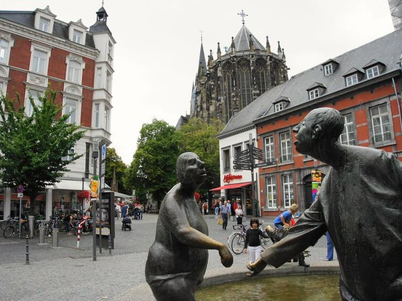
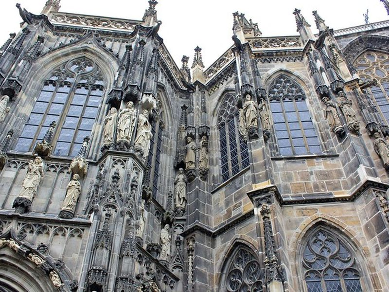
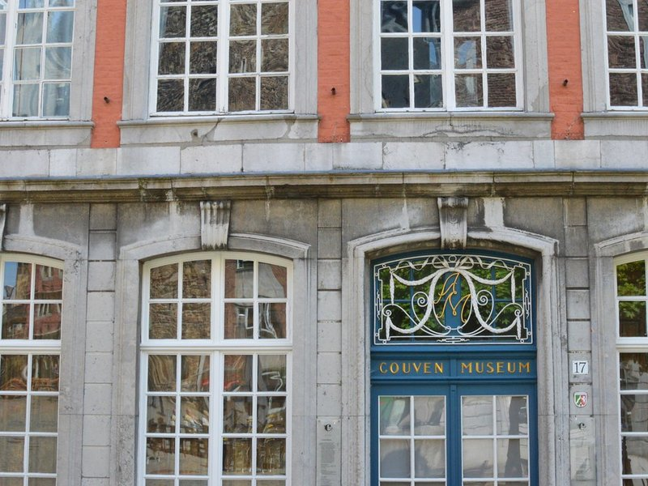
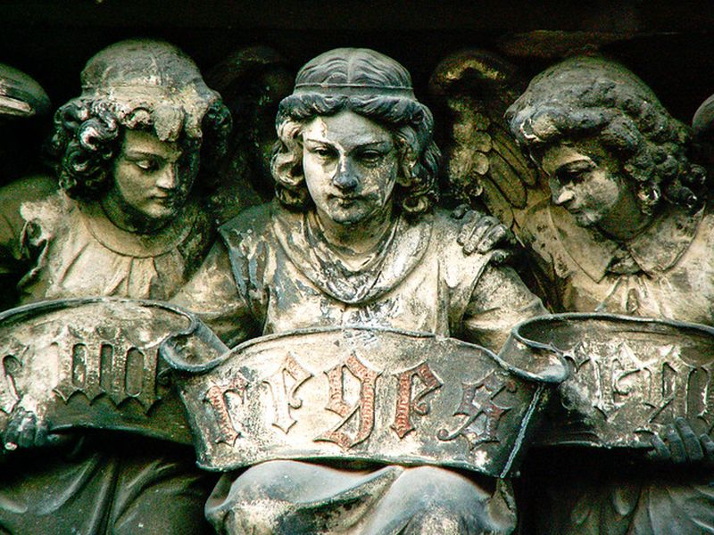
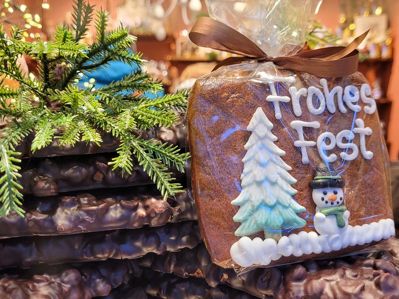
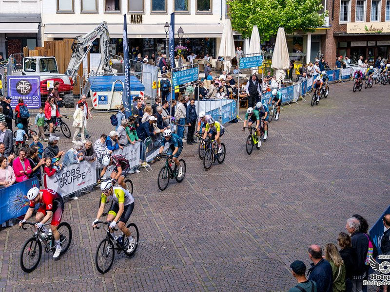

Explore Aachen
A Brief History
Aachen rose from Roman thermal springs to the favored palace of Charlemagne and later a free imperial city. The cathedral, town hall, market spaces, fountains, and surviving gate preserve the city's Carolingian, medieval, and spa-era identities in a compact urban core.
Attractions Map
Top Sights & Activities

Elisenbrunnen
The Elisenbrunnen is a neoclassical colonnade and fountain hall built in 1827 over one of Aachen's hot mineral springs. Visitors can sample the sulphurous water from two drinking fountains and see the marble bust of Emperor Frederick III. The building stands on Friedrich-Wilhelm-Platz and recalls the city's long reputation as a spa destination.

Aachen Cathedral
Aachen Cathedral grew from Charlemagne's Palatine Chapel of about 800 and served for centuries as the coronation church of German kings. The octagonal core, Gothic choir, and treasury preserve Carolingian, Ottonian, and later medieval work. The building is a UNESCO World Heritage site at the heart of the old city.

Puppenbrunnen, Aachen
The Puppenbrunnen is a bronze fountain by Bonifatius Stirnberg installed in 1975 on Krämerstraße between cathedral and town hall. Movable figures include a cardinal, market woman, and printer, referencing local history and guild traditions. The fountain adds a contemporary civic landmark to one of the oldest pedestrian routes in the center.

Rathaus Aachen
Aachen Town Hall incorporates parts of the medieval imperial palace and was rebuilt in Gothic style from the 14th century onward. The Coronation Hall hosted banquets after imperial coronations in the cathedral. The facade and council chambers show how the free imperial city expressed civic authority beside the church.

Markt
The Markt is the main square west of the cathedral and in front of the Rathaus, framed by guild houses and the Karlsbrunnen fountain of 1620. Markets, festivals, and public events still use the space today. It is the principal orientation point where commercial life meets Aachen's imperial and civic memory.

Ponttor
The Ponttor is a surviving gate of Aachen's outer medieval city walls, built in the 14th century on the road toward Maastricht. Its twin round towers and arch mark the historic northern approach to the center. The gate helps place the cathedral quarter within the larger defensive layout of the walled town.